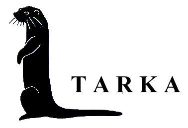

<!DOCTYPE HTML PUBLIC "-//W3C//DTD HTML 4.01 Transitional//EN">
<html><head></head>
<body><table style="text-align: left; width: 1024px;" border="0" cellpadding="2" cellspacing="2">
  <tbody>
    <tr>
      <td style="vertical-align: top;"><br>
      </td>
      <td style="vertical-align: top;"><h1 style="text-align: center;"><span style="font-family: &quot;Times New Roman&quot;,serif;">Geschichte der Segeljacht "TARKA"</span></h1><h1><span style="font-family: &quot;Times New Roman&quot;,serif;"></span></h1><h1><big>
      </big></h1><br></td>
    </tr>
  </tbody>
</table>
<table style="text-align: left; width: 1024px;" border="0" cellpadding="2" cellspacing="2">
  <tbody>
    <tr>
      <td style="vertical-align: top;"><h3><b style=""><span style="font-size: 12pt; font-family: &quot;Times New Roman&quot;,serif;" lang="DE">1977</span></b><span style="font-size: 12pt; font-family: &quot;Times New Roman&quot;,serif;" lang="DE"> <span style="">&nbsp;&nbsp; </span><o:p></o:p></span></h3>

<p class="MsoNormal"><span style="font-size: 12pt; font-family: &quot;Times New Roman&quot;,serif;" lang="DE">Die
Jacht ist im Jahre 1977 bei Camper &amp; Nicholson in Gosport / England
unter
Baunummer 50 gebaut worden. Sie ist damals, zusammen mit mehreren
anderen
Jachten, von Peek Yachting importiert und zuerst als Demoschiff
eingesetzt. <o:p></o:p></span></p>

<h3><b style=""><span style="font-size: 12pt; font-family: &quot;Times New Roman&quot;,serif;" lang="DE">1991</span></b><span style="font-size: 12pt; font-family: &quot;Times New Roman&quot;,serif;" lang="DE"><span style="">&nbsp;&nbsp;&nbsp; </span><o:p></o:p></span></h3>

<p class="MsoNormal"><span style="font-size: 12pt; font-family: &quot;Times New Roman&quot;,serif;" lang="DE">Ich
habe die Jacht Ende 1991 erworben und in der Nähe meiner Wohnung
zunächst auf dem
Kai hingestellt. <span style="">&nbsp;</span>Während der
Wintermonate wurden vielerlei Arbeiten durchgeführt:<o:p></o:p></span></p>

<ul style="margin-top: 0cm;" type="disc"><li class="MsoNormal" style=""><span style="font-size: 12pt; font-family: &quot;Times New Roman&quot;,serif;" lang="DE">Das Plexiglas der beiden Luken wurde erneuert. <o:p></o:p></span></li><li class="MsoNormal" style=""><span style="font-size: 12pt; font-family: &quot;Times New Roman&quot;,serif;" lang="DE">Die elektrische Anlage wurde verbessert.<o:p></o:p></span></li><li class="MsoNormal" style=""><span style="font-size: 12pt; font-family: &quot;Times New Roman&quot;,serif;" lang="DE">Ein Wasser angetriebener Generator wurde angeschafft und am
Heck angehängt. Dieser Generator ist momentan demontiert und nicht an
Bord, gehört jedoch zur Lieferung. <o:p></o:p></span></li><li class="MsoNormal" style=""><span style="font-size: 12pt; font-family: &quot;Times New Roman&quot;,serif;" lang="DE">Der Treibstofftank wurde gründlich saubergemacht und mit
einem Standglas versehen.<o:p></o:p></span></li><li class="MsoNormal" style=""><span style="font-size: 12pt; font-family: &quot;Times New Roman&quot;,serif;" lang="DE">Liegende Deckblöcke mit Klemmen wurden montiert. <o:p></o:p></span></li><li class="MsoNormal" style=""><span style="font-size: 12pt; font-family: &quot;Times New Roman&quot;,serif;" lang="DE">Eine Fu<span class="deel4">ß pumpe wurde im Waschraum
installiert. <o:p></o:p></span></span></li><li class="MsoNormal" style=""><span class="deel4"><span style="font-size: 12pt; font-family: &quot;Times New Roman&quot;,serif;" lang="DE">Steckdosen wurden erneuert durch wasserdichte Typen. <o:p></o:p></span></span></li><li class="MsoNormal" style=""><span class="deel4"><span style="font-size: 12pt; font-family: &quot;Times New Roman&quot;,serif;" lang="DE">Die Fenster wurden demontiert und mit neuem Tape versehen,
so dass sie alle wieder wasserdicht waren. <span style="">&nbsp;</span><span style="">&nbsp;&nbsp;&nbsp;&nbsp;</span><o:p></o:p></span></span></li><li class="MsoNormal" style=""><span class="deel4"><span style="font-size: 12pt; font-family: &quot;Times New Roman&quot;,serif;" lang="DE">Viele Arbeiten wurden durchgeführt, um das Schiff für
längere Segeltörns besser herzurichten.<o:p></o:p></span></span></li></ul>

<h3><span class="deel4"><b style=""><span style="font-size: 12pt; font-family: &quot;Times New Roman&quot;,serif;" lang="DE">1992</span></b></span><span class="deel4"><span style="font-size: 12pt; font-family: &quot;Times New Roman&quot;,serif;" lang="DE">
<span style="">&nbsp;&nbsp;</span><o:p></o:p></span></span></h3>

<p class="MsoNormal"><span class="deel4"><span style="font-size: 12pt; font-family: &quot;Times New Roman&quot;,serif;" lang="DE">Mehrere Segeltörns wurden gemacht,
u.a.<span style="">&nbsp; </span>nach England, der Westküste
Schottlands und den Hebriden.<o:p></o:p></span></span></p>

<ul style="margin-top: 0cm;" type="disc"><li class="MsoNormal" style=""><span class="deel4"><span style="font-size: 12pt; font-family: &quot;Times New Roman&quot;,serif;" lang="DE">Ein Susuki-Außenbordmotor wurde gekauft.<o:p></o:p></span></span></li></ul>

<h3><span class="deel4"><b style=""><span style="font-size: 12pt; font-family: &quot;Times New Roman&quot;,serif;" lang="DE">1993</span></b></span><span class="deel4"><span style="font-size: 12pt; font-family: &quot;Times New Roman&quot;,serif;" lang="DE">
<span style="">&nbsp;&nbsp;</span><o:p></o:p></span></span></h3>

<p class="MsoNormal" style="margin-left: 35.4pt; text-indent: -35.4pt;"><span class="deel4"><span style="font-size: 12pt; font-family: &quot;Times New Roman&quot;,serif;" lang="DE">Wir segeln erneut nach England, besuchen die
Isles of Scilly und Schottland.</span></span><span style="font-size: 12pt; font-family: &quot;Times New Roman&quot;,serif;" lang="DE"><br>
</span></p>

<p class="MsoNormal" style="margin-left: 35.4pt; text-indent: -35.4pt;"><span style="font-size: 12pt; font-family: &quot;Times New Roman&quot;,serif;" lang="DE">Während der
Winterperiode werden folgende Arbeiten durchgeführt: <span style="">&nbsp;</span><o:p></o:p></span></p>

<ul style="margin-top: 0cm;" type="disc"><li class="MsoNormal" style=""><span style="font-size: 12pt; font-family: &quot;Times New Roman&quot;,serif;" lang="DE">eine Bouvaan Windsteueranlage wird am Heck angebracht, <o:p></o:p></span></li><li class="MsoNormal" style=""><span style="font-size: 12pt; font-family: &quot;Times New Roman&quot;,serif;" lang="DE">ein Philips Mk8 GPS wird angeschafft sowie eine Raytheon
Radaranlage<o:p></o:p></span></li><li class="MsoNormal" style=""><span style="font-size: 12pt; font-family: &quot;Times New Roman&quot;,serif;" lang="DE">eine Navtex Lokata mit Papier Printer wird angeschafft,
damit immer Not-, Wetter- und nautische Berichte empfangen werden
können. <o:p></o:p></span></li><li class="MsoNormal" style=""><span style="font-size: 12pt; font-family: &quot;Times New Roman&quot;,serif;" lang="DE">In der Kombüse wird eine Außenwasser-Fu<span class="deel4">ßpumpe
angebracht.<o:p></o:p></span></span></li><li class="MsoNormal" style=""><span class="deel4"><span style="font-size: 12pt; font-family: &quot;Times New Roman&quot;,serif;" lang="DE">Das alte Rettungsfloß wird ersetzt durch eine Rettungsinsel
in einem kleinen Container und auf dem Kajütendach montiert. <o:p></o:p></span></span></li><li class="MsoNormal" style=""><span class="deel4"><span style="font-size: 12pt; font-family: &quot;Times New Roman&quot;,serif;" lang="DE">Obwohl die Holzkohle-Heizung ausgezeichnet funktionierte,
wird sie durch eine Taylors dripfeed- Heizung mit Flammüberwachung
ersetzt. Der Brennstofftank wird außen auf dem Dach montiert. Die
Heizung verbraucht selbstverständlich keine Elektrizität. <span style="">&nbsp;</span>Sie arbeitet mit Diesel oder Petroleum. <o:p></o:p></span></span></li></ul>

<h3><span class="deel4"><b style=""><span style="font-size: 12pt; font-family: &quot;Times New Roman&quot;,serif;" lang="DE">1994</span></b></span><span class="deel4"><span style="font-size: 12pt; font-family: &quot;Times New Roman&quot;,serif;" lang="DE">
<span style="">&nbsp;&nbsp;</span><o:p></o:p></span></span></h3>

<p class="MsoNormal"><span class="deel4"><span style="font-size: 12pt; font-family: &quot;Times New Roman&quot;,serif;" lang="DE">Als Segler-Gruppe segeln wir nach
Norwegen, umrunden das Nordkap und segeln nach Archangelsk in Russland.
Dieses geschah
im Rahmen der 300 Jahr-Feier der Russischen Flotte. In der betreffenden
Periode
haben die Holländer seemäßig eine sehr wichtige Rolle gespielt.<span style="">&nbsp;&nbsp;&nbsp; </span><span style="">&nbsp;&nbsp; </span><o:p></o:p></span></span></p>

<p class="MsoNormal"><span class="deel4"><span style="font-size: 12pt; font-family: &quot;Times New Roman&quot;,serif;" lang="DE">Die Segeltörn führt uns via Archangelsk
und dem Weißen Meer zu den Solovetsky Inseln, eine ehemalige
Strafkolonie. Die
meistens politischen Gefangenen mussten u.a. schwere Arbeiten am
Belomorsk-Baltiskaya-Kanal verrichten, der eine Verbindung zwischen dem
Weißen
Meer und dem Finnischen Golf herstellte. Auf der Insel befindet sich
das
Kloster Der Kreml, datierend rund 1200. Man ist dabei, das Kloster zu
restaurieren. <o:p></o:p></span></span></p>

<p class="MsoNormal"><span class="deel4"><span style="font-size: 12pt; font-family: &quot;Times New Roman&quot;,serif;" lang="DE">Durch den o.a. Belomorsk-Baltiskaya-Kanal
segeln wir nach St.Petersburg. Unterwegs besuchen wir<span style="">&nbsp;
</span>u.a. die schöne Stadt Petrosavodsk am Onega
Meer mit seiner schönen <span style="">&nbsp;</span>Promenade und dem
Freilichtmuseum auf der Insel Kishi. Eine wirklich sehr interessante
Törn.<o:p></o:p></span></span></p>

<p class="MsoNormal"><span class="deel4"><span style="font-size: 12pt; font-family: &quot;Times New Roman&quot;,serif;" lang="DE">Nachdem wir Finnland besucht haben, segel
ich single handed von Tallinn / Estland wieder zurück nach den
Niederlanden.<o:p></o:p></span></span></p>

<h3><span class="deel4"><b style=""><span style="font-size: 12pt; font-family: &quot;Times New Roman&quot;,serif;" lang="DE">1995</span><span style="font-size: 12pt; font-family: &quot;Times New Roman&quot;,serif;" lang="DE"> <span style="">&nbsp;&nbsp;</span></span><u><span style="font-size: 12pt; font-family: &quot;Times New Roman&quot;,serif;" lang="DE"><span style=""> </span><o:p></o:p></span></u></b></span></h3>

<p class="MsoNormal"><span class="deel4"><span style="font-size: 12pt; font-family: &quot;Times New Roman&quot;,serif;" lang="DE">In diesem Jahr liegt das Boot auf dem Kai.
<o:p></o:p></span></span></p>

<ul style="margin-top: 0cm;" type="disc"><li class="MsoNormal" style=""><span class="deel4"><span style="font-size: 12pt; font-family: &quot;Times New Roman&quot;,serif;" lang="DE">Es werden Fallstopper am Mast und Baum montiert. <o:p></o:p></span></span></li><li class="MsoNormal" style=""><span class="deel4"><span style="font-size: 12pt; font-family: &quot;Times New Roman&quot;,serif;" lang="DE">Weiter wird der Mast mit Maststufen versehen, damit ich
jederzeit ohne Hilfe sicher nach oben kann.<o:p></o:p></span></span></li><li class="MsoNormal" style=""><span class="deel4"><span style="font-size: 12pt; font-family: &quot;Times New Roman&quot;,serif;" lang="DE">Der UKW-Seefunk wird mit dem erforderlichen ATIS versehen
und technisch angepasst das man jetzt, wenn erwünscht, <span style="">&nbsp;</span>auf
allen Kanälen mit maximaler Leistung arbeiten kann.<o:p></o:p></span></span></li><li class="MsoNormal" style=""><span class="deel4"><span style="font-size: 12pt; font-family: &quot;Times New Roman&quot;,serif;" lang="DE">Die Werft stattet das Boot aus mit einer Teak Scheuerleiste.<o:p></o:p></span></span></li><li class="MsoNormal" style=""><span class="deel4"><span style="font-size: 12pt; font-family: &quot;Times New Roman&quot;,serif;" lang="DE">Die Ofenröhren werden verbessert <o:p></o:p></span></span></li><li class="MsoNormal" style=""><span class="deel4"><span style="font-size: 12pt; font-family: &quot;Times New Roman&quot;,serif;" lang="DE">zwei Falt-Fahrräder werden angeschafft <o:p></o:p></span></span></li><li class="MsoNormal" style=""><span class="deel4"><span style="font-size: 12pt; font-family: &quot;Times New Roman&quot;,serif;" lang="DE">Selbstverständlich werden ferner die üblichen Arbeiten wie
Lackieren usw. durchgeführt. <o:p></o:p></span></span></li></ul>

<h3><span class="deel4"><b style=""><span style="font-size: 12pt; font-family: &quot;Times New Roman&quot;,serif;" lang="DE">1996<span style="">&nbsp; </span></span></b></span><span class="deel4"><span style="font-size: 12pt; font-family: &quot;Times New Roman&quot;,serif;" lang="DE"><span style="">&nbsp;</span><o:p></o:p></span></span></h3>

<p class="MsoNormal"><span class="deel4"><span style="font-size: 12pt; font-family: &quot;Times New Roman&quot;,serif;" lang="DE">Als Gruppe segeln wir erneut Richtung
Russland. Dieses Mal zuerst nach Lerwick auf den Shetlands und dann
wieder rund
um das Nordkap nach Murmansk. Wir sind die ersten ausländischen
Segelboote, die
unter eigener Flagge den Hafen anlaufen, übrigens in eisiger Kälte.<o:p></o:p></span></span></p>

<p class="MsoNormal"><span class="deel4"><span style="font-size: 12pt; font-family: &quot;Times New Roman&quot;,serif;" lang="DE">Weiter geht die Reise via Archangelsk, Solovetsky,
Onega- und Ladoga See nach St.Petersburg. Im Norden des Ladoga Sees
besuchen
wir die Inselgruppe Valaam mit dem prächtigen Valaam Kloster mit der
kupfernen
Kuppel.<o:p></o:p></span></span></p>

<p class="MsoNormal"><span class="deel4"><span style="font-size: 12pt; font-family: &quot;Times New Roman&quot;,serif;" lang="DE">Anlass für diese Reise war dieses Mal das
Jahr Zar Peter der Große. <span style="">&nbsp;</span><o:p></o:p></span></span></p>

<p class="MsoNormal"><span class="deel4"><span style="font-size: 12pt; font-family: &quot;Times New Roman&quot;,serif;" lang="DE">Auf der Newa, vor der Hermitage, durften
wir als Gruppe für unseren damaligen Thronfolger Willem Alexander eine
Flottenparade abhalten. Ich durfte mit einer kleinen Gruppe von uns
eine
Musikveranstaltung in der kleinen Hermitage beiwohnen mit
anschließendem Empfang,
wobei Prinz Willem Alexander sowie manche <span style="">&nbsp;</span>niederländische
und russische Botschafter
anwesend waren.<o:p></o:p></span></span></p>

<h3><span class="deel4"><span style="font-size: 12pt; font-family: &quot;Times New Roman&quot;,serif;" lang="DE"><span style="font-weight: normal;">Von St.Petersburg ging es dann wieder
zurück via der bekannten und üblichen Route über Tallinn und Danzig
nach Holland.
</span><span style="">&nbsp;</span><span style="">&nbsp;</span><o:p></o:p></span></span></h3>

<h3><span class="deel4"><b style=""><span style="font-size: 12pt; font-family: &quot;Times New Roman&quot;,serif;" lang="DE">1997 und 1998</span></b></span><span class="deel4"><span style="font-size: 12pt; font-family: &quot;Times New Roman&quot;,serif;" lang="DE">
<span style="">&nbsp;</span><o:p></o:p></span></span></h3>

<p class="MsoNormal" style="margin-left: 35.4pt; text-indent: -35.4pt;"><span class="deel4"><span style="font-size: 12pt; font-family: &quot;Times New Roman&quot;,serif;" lang="DE">Das
Boot liegt wieder ganzjährig auf dem Kai. <o:p></o:p></span></span></p>

<ul style="margin-top: 0cm;" type="disc"><li class="MsoNormal" style=""><span class="deel4"><span style="font-size: 12pt; font-family: &quot;Times New Roman&quot;,serif;" lang="DE">Sie wird vorsorglich gegen Osmose behandelt und danach
werden <o:p></o:p></span></span><span class="deel4"><span style="font-size: 12pt; font-family: &quot;Times New Roman&quot;,serif;" lang="DE">mehrere Schichten
Coppercoat angebracht.<o:p></o:p></span></span></li><li class="MsoNormal" style=""><span class="deel4"><span style="font-size: 12pt; font-family: &quot;Times New Roman&quot;,serif;" lang="DE">Die stehende Takelage wird erneuert und verstärkt. <o:p></o:p></span></span></li><li class="MsoNormal" style=""><span class="deel4"><span style="font-size: 12pt; font-family: &quot;Times New Roman&quot;,serif;" lang="DE">Alle Spannschrauben werden ersetzt durch schwere Hasselfors
Spannschrauben. <o:p></o:p></span></span></li><li class="MsoNormal" style=""><span class="deel4"><span style="font-size: 12pt; font-family: &quot;Times New Roman&quot;,serif;" lang="DE">Es wird ein Not-Vorstag angebracht. Normalerweise ist er nur
handfest angezogen und steht gleich vor dem Vorstag. Er dient zur
Sicherung, sollte der Vorstag brechen. Ebenfalls wird dieser
Not-Vorstag für den Hals des Halbwinders verwendet. Bei schwerem Wetter
kann der Not-Vorstag mittels einer Pelikanhake hinter dem Vorstag in
einer Öse im Deck befestigt werden, wodurch es möglich ist, eine kleine
Fock oder die Sturmfock zu setzen. Beide Focken wurden dazu mit
Segelreiter versehen.<o:p></o:p></span></span></li><li class="MsoNormal" style=""><span class="deel4"><span style="font-size: 12pt; font-family: &quot;Times New Roman&quot;,serif;" lang="DE">Der Motor wird herausgenommen und mit neuen elastischen
Motorstützen<span style="">&nbsp; </span>versehen. <o:p></o:p></span></span></li><li class="MsoNormal" style=""><span class="deel4"><span style="font-size: 12pt; font-family: &quot;Times New Roman&quot;,serif;" lang="DE">Kupplungsplatten, Packungen und Dichtungen werden erneuert.<o:p></o:p></span></span></li><li class="MsoNormal" style=""><span class="deel4"><span style="font-size: 12pt; font-family: &quot;Times New Roman&quot;,serif;" lang="DE">Ein neues Großsegel sowie Genua und Sprayhood werden gekauft.<span style="">&nbsp; </span><o:p></o:p></span></span></li><li class="MsoNormal" style=""><span class="deel4"><span style="font-size: 12pt; font-family: &quot;Times New Roman&quot;,serif;" lang="DE">Deckblöcke mit Klemme werden montiert. <o:p></o:p></span></span></li><li class="MsoNormal" style=""><span class="deel4"><span style="font-size: 12pt; font-family: &quot;Times New Roman&quot;,serif;" lang="DE">Zwei extra Enkes ST Winschen werden ebenfalls montiert. Sie
dienen u.a. für: Reff-Leine der Genua, Hals des Halbwinders und
Sicherungsleinen.<o:p></o:p></span></span></li><li class="MsoNormal" style=""><span class="deel4"><span style="font-size: 12pt; font-family: &quot;Times New Roman&quot;,serif;" lang="DE">Es wird ein Cockpit-Zelt gekauft und die beiden
Cockpit-Kissen werden erneuert.<span style="">&nbsp; </span><o:p></o:p></span></span></li></ul>

<h3><span class="deel4"><b style=""><span style="font-size: 12pt; font-family: &quot;Times New Roman&quot;,serif;" lang="DE">1999</span></b></span><span class="deel4"><span style="font-size: 12pt; font-family: &quot;Times New Roman&quot;,serif;" lang="DE">
<span style="">&nbsp;&nbsp;</span><o:p></o:p></span></span></h3>

<p class="MsoNormal"><span class="deel4"><span style="font-size: 12pt; font-family: &quot;Times New Roman&quot;,serif;" lang="DE">Dieses Jahr geht es mit der Tarka nach
Helsinki, wobei wir in der Nähe von dem Russischen Vyborg durch den
Finnisch / Russischen
Kanal zu den prächtigen Saimaa-Seen fahren. Wir segeln u.a. zur
Opernstadt
Savonlinna und Kuopio und staunen über den eindrucksvollen Imatra
Staudamm.<span style="">&nbsp; </span><o:p></o:p></span></span></p>

<p class="MsoNormal"><span class="deel4"><span style="font-size: 12pt; font-family: &quot;Times New Roman&quot;,serif;" lang="DE">Wir sind beeindruckt von der fantastischen
und ruhigen Landschaft mit sehr viel Naturschönheit und freundlichen
Menschen, die
glücklicherweise fast alle Englisch sprechen. Die finnische Sprache ist
fast unmöglich
schwierig. <span style="">&nbsp;</span><o:p></o:p></span></span></p>

<p class="MsoNormal"><span class="deel4"><span style="font-size: 12pt; font-family: &quot;Times New Roman&quot;,serif;" lang="DE">Von Helsinki aus ( einer wirklich schönen
Stadt mit prächtiger Kathedrale und eindrucksvollen Stadtteilen ) geht
die
Reise via Tallinn, Danzig und Peenemünde zurück nach Holland.<o:p></o:p></span></span></p>

<h3><span class="deel4"><b style=""><span style="font-size: 12pt; font-family: &quot;Times New Roman&quot;,serif;" lang="DE">2000 </span></b></span><span class="deel4"><span style="font-size: 12pt; font-family: &quot;Times New Roman&quot;,serif;" lang="DE"><span style="">&nbsp;&nbsp;</span><o:p></o:p></span></span></h3>

<p class="MsoNormal"><span class="deel4"><span style="font-size: 12pt; font-family: &quot;Times New Roman&quot;,serif;" lang="DE">Das Boot liegt während dieses ganzen Jahres
auf dem Kai.<o:p></o:p><br>
Erneut werden die üblichen Arbeiten am
Boot gründlich durchgeführt und überprüft, u.a. <span style="">&nbsp;</span>wegen
der geplanten Segeltörn in 2001.<o:p></o:p></span></span></p>

<h3><span class="deel4"><b style=""><span style="font-size: 12pt; font-family: &quot;Times New Roman&quot;,serif;" lang="DE">2001</span></b></span><span class="deel4"><span style="font-size: 12pt; font-family: &quot;Times New Roman&quot;,serif;" lang="DE">
<span style="">&nbsp;&nbsp;</span><o:p></o:p></span></span></h3>

<p class="MsoNormal"><span class="deel4"><span style="font-size: 12pt; font-family: &quot;Times New Roman&quot;,serif;" lang="DE">Wir fahren via der Indreleia-Route in
Norwegen zu den Lofoten und segeln von Andenes ab nach Longyearbyen auf
Spitzbergen, rund 600 Seemeilen. Hier verbleiben wir viele Wochen und besuchen nicht
nur die
Hauptstadt Longyearbyen, sondern auch u.a. das jetzt russische
Barentsburg, Ny
Ålesund, die Siedlung London, Trinityhamn, Virgohamn und die
holländische
Walstation Smeerenburg im Norden Spitzbergens. Eine sehr faszinierende
Fahrt,
die schon viele Jahre auf meiner Wunschliste stand.<span style="">&nbsp;&nbsp;&nbsp;&nbsp;&nbsp;&nbsp;&nbsp;&nbsp;
</span><o:p></o:p></span></span></p>

<p class="MsoNormal"><span class="deel4"><span style="font-size: 12pt; font-family: &quot;Times New Roman&quot;,serif;" lang="DE">Nach der Fahrt zurück nach Norwegen geht
es teilweise außenherum und bei schlechtem Wetter via die
Indreleia-Route
zurück nach Holland.<o:p></o:p></span></span></p>

<h3><span class="deel4"><b style=""><span style="font-size: 12pt; font-family: &quot;Times New Roman&quot;,serif;" lang="DE">2002, 2003,2004
und 2005</span></b></span><span class="deel4"><span style="font-size: 12pt; font-family: &quot;Times New Roman&quot;,serif;" lang="DE"> <o:p></o:p></span></span></h3>

<p class="MsoNormal"><span class="deel4"><span style="font-size: 12pt; font-family: &quot;Times New Roman&quot;,serif;" lang="DE">Während dieser Jahre liegt das Bot auf dem
Kai.<o:p></o:p></span></span></p>

<ul style="margin-top: 0cm;" type="disc"><li class="MsoNormal" style=""><span class="deel4"><span style="font-size: 12pt; font-family: &quot;Times New Roman&quot;,serif;" lang="DE">Das Ueberwasserschiff<span style="">&nbsp; </span>wird neu
angestrichen. <o:p></o:p></span></span></li><li class="MsoNormal" style=""><span class="deel4"><span style="font-size: 12pt; font-family: &quot;Times New Roman&quot;,serif;" lang="DE">Ein neuer Propeller und eine neue Welle werden montiert. <o:p></o:p></span></span></li></ul>

<h3><span class="deel4"><b style=""><span style="font-size: 12pt; font-family: &quot;Times New Roman&quot;,serif;" lang="DE">Seit 2005</span><u><span style="font-size: 12pt; font-family: &quot;Times New Roman&quot;,serif;" lang="DE"><o:p></o:p></span></u></b></span></h3>

<p class="MsoNormal"><span class="deel4"><span style="font-size: 12pt; font-family: &quot;Times New Roman&quot;,serif;" lang="DE">Seit diesem Jahr segel ich fast immer alleine
bzw. "Single handed".<o:p></o:p></span></span></p>

<h3><span class="deel4"><b style=""><span style="font-size: 12pt; font-family: &quot;Times New Roman&quot;,serif;" lang="DE">2009</span><u><span style="font-size: 12pt; font-family: &quot;Times New Roman&quot;,serif;" lang="DE"><o:p></o:p></span></u></b></span></h3>

<p class="MsoNormal"><span class="deel4"><span style="font-size: 12pt; font-family: &quot;Times New Roman&quot;,serif;" lang="DE">U.m. wieder single handed die englische
Ostküste und St.Katharine Dock in London.<o:p></o:p></span></span></p>

<h3><span class="deel4"><b style=""><span style="font-size: 12pt; font-family: &quot;Times New Roman&quot;,serif;" lang="DE">2015</span></b></span><span class="deel4"><span style="font-size: 12pt; font-family: &quot;Times New Roman&quot;,serif;" lang="DE"><span style="">&nbsp;&nbsp;&nbsp; </span><o:p></o:p></span></span></h3>

<ul style="margin-top: 0cm;" type="disc"><li class="MsoNormal" style=""><span class="deel4"><span style="font-size: 12pt; font-family: &quot;Times New Roman&quot;,serif;" lang="DE">Genua und die Furlex Rollreffanlage werden erneuert.<o:p></o:p></span></span></li><li class="MsoNormal" style=""><span style="font-size: 12pt; font-family: &quot;Times New Roman&quot;,serif;" lang="DE">Der Philips GPS wird ersetzt durch ein Furuno GP 32.<o:p></o:p></span></li></ul>

<h3><span class="deel4"><b style=""><span style="font-size: 12pt; font-family: &quot;Times New Roman&quot;,serif;" lang="DE">2017 <span style="">&nbsp;&nbsp; </span><o:p></o:p></span></b></span></h3>

<ul style="margin-top: 0cm;" type="disc"><li class="MsoNormal" style=""><span class="deel4"><span style="font-size: 12pt; font-family: &quot;Times New Roman&quot;,serif;" lang="DE">Während dieses ganzen Jahres liegt das Bot auf dem Kai.<o:p></o:p></span></span></li><li class="MsoNormal" style=""><span class="deel4"><span style="font-size: 12pt; font-family: &quot;Times New Roman&quot;,serif;" lang="DE">Das Ueberwasserschiff wird mehrere Male erneut angestrichen
mit 2K Lack.</span></span></li></ul><h3><span class="deel4"><span style="font-size: 12pt; font-family: &quot;Times New Roman&quot;,serif;" lang="DE">2018</span></span></h3>

<span lang="DE">In 2018 besuche ich wider single handed England
und auf der R</span><span style="font-family: &quot;Times New Roman&quot;,&quot;serif&quot;;" lang="DE">ü</span><span lang="DE">ckreise Frankreich, Belgien und Zeeland.</span><br><span lang="DE">Ich bin aber sehr neugierig wie es in 2019, nach dem Brexit, geht. Wider die "Gelbe" Flagge?<br><br><span style="font-weight: bold;">2019<br></span>Wegen Probleme mit der GPS "Week roll over"&nbsp; funktionierte der vertraute Lowrance Plotter leider nicht mehr.<br>Darum ein neue Plotter angeschaft: Raymarine eS75 "Hybridtouch".<br>Schon viele Jahren habe ich ein AIS Empfanger an Bord damit ich, wenn nótig, ein Schiff bei Nahme anrufen kann.<br>Grosze Schiffe kónten mich selbstverstándlich leider nicht sehen weil ich nur ein Empfanger.hätte.<br>Daher auch noch ein AIS Class B Transponder erworben, Em-Trak B 350 mit 5 Watt Sendeleistung.<br>Jetzt &nbsp;kann ich alle Schiffe in Rechtweisenden Kurs auf mein Plotter sehen.<br>Weiterhin wider mal die&nbsp; UK und Scotland besucht. <br><span style="font-weight: bold;"></span></span><h3><span class="deel4"><b style=""><span style="font-size: 12pt; font-family: &quot;Times New Roman&quot;,serif;" lang="DE">Abschließend:</span><u><span style="font-size: 12pt; font-family: &quot;Times New Roman&quot;,serif;" lang="DE">
<o:p></o:p></span></u></b></span></h3>

<ul style="margin-top: 0cm;" type="disc"><li class="MsoNormal" style=""><span class="deel4"><span style="font-size: 12pt; font-family: &quot;Times New Roman&quot;,serif;" lang="DE">Das Boot ist ausgezeichnet ausgerüstet auch um single handed
segeln zu können.<o:p></o:p></span></span></li><li class="MsoNormal" style=""><span class="deel4"><span style="font-size: 12pt; font-family: &quot;Times New Roman&quot;,serif;" lang="DE">Ich habe viele single handed Fahrten gemacht : Dänemark,
Schweden, selbstverständlich alle friesischen Inseln und Küstenstädte,&nbsp;</span></span></li><li class="MsoNormal" style=""><span class="deel4"><span style="font-size: 12pt; font-family: &quot;Times New Roman&quot;,serif;" lang="DE">Greifswalder Bodden, Peenemünde und Polen.</span></span></li><li class="MsoNormal" style=""><span class="deel4"><span style="font-size: 12pt; font-family: &quot;Times New Roman&quot;,serif;" lang="DE">Auch Spitsbergen kann ich Ankreuzen auf meine Liste. Wir erreichen fast 80° Norderbreite. <o:p></o:p></span></span></li><li class="MsoNormal" style=""><span class="deel4"><span style="font-size: 12pt; font-family: &quot;Times New Roman&quot;,serif;" lang="DE">London wurde besucht und viele Male single handed die
englische Ost-und Südküste, Norwegen und der Limfjord usw. <span style="">&nbsp;&nbsp;&nbsp;</span><o:p></o:p></span></span></li><li class="MsoNormal" style=""><span class="deel4"><span style="font-size: 12pt; font-family: &quot;Times New Roman&quot;,serif;" lang="DE">Während der längeren Törns mit der Tarka wurden zwischen
3.000 bis 5.000 Seemeilen zurückgelegt.<o:p></o:p></span></span></li><li class="MsoNormal" style=""><span class="deel4"><span style="font-size: 12pt; font-family: &quot;Times New Roman&quot;,serif;" lang="DE">Single handed fahre ich jedes Jahr etwa 600 bis 900
Seemeilen.<o:p></o:p></span></span></li><li class="MsoNormal" style=""><span class="deel4"><span style="font-size: 12pt; font-family: &quot;Times New Roman&quot;,serif;" lang="DE">Auf dem offenen Meer ist die Tarka hervorragend
zuverlässig und ein kompaktes <o:p></o:p></span></span><span class="deel4"><span style="font-size: 12pt; font-family: &quot;Times New Roman&quot;,serif;" lang="DE"><span style=""></span>seetüchtiges Segelschiff. <span style="">&nbsp;</span><o:p></o:p></span></span></li><li class="MsoNormal" style=""><span class="deel4"><span style="font-size: 12pt; font-family: &quot;Times New Roman&quot;,serif;" lang="DE">Die Tarka ist mehr als komplett ausgestattet, wobei ich
ruhig sagen kann, dass außer Wasser, Diesel und Proviant, absolut
nichts Erforderliches notwendig ist, um eine zuverlässige Segeltörn zu
unternehmen.<o:p></o:p></span></span></li><li class="MsoNormal" style=""><span class="deel4"><span style="font-size: 12pt; font-family: &quot;Times New Roman&quot;,serif;" lang="DE">Sie ist womöglich die am besten ausgerüstete Nicholson 31 ! <span style="">&nbsp;&nbsp;&nbsp;&nbsp;&nbsp;&nbsp;&nbsp;&nbsp;&nbsp;&nbsp;&nbsp;&nbsp;&nbsp;&nbsp;&nbsp;&nbsp;&nbsp;&nbsp;
    </span><o:p></o:p></span></span></li><li class="MsoNormal" style=""><span style="font-size: 12pt; font-family: &quot;Times New Roman&quot;,serif;" lang="DE">Aus Altersgründen muss ich leider das Segeln aufgeben. Für
mich kein einfacher Abschied von dieser von mir geliebten sportlichen
Tätigkeit als auch von meinem prächtigen Segelyacht.<b style=""><o:p></o:p></b></span></li><li class="MsoNormal" style=""><span class="deel4"><span style="font-size: 12pt; font-family: &quot;Times New Roman&quot;,serif;" lang="DE">Beim Verkauf ist sie also wirklich: <b style="">Ready to
sail anywhere.</b><span style="">&nbsp;&nbsp;&nbsp; </span><span style="">&nbsp;</span><span style="">&nbsp;</span><b style=""><o:p></o:p></b></span></span></li></ul>


      </td>
    </tr>
  </tbody>
</table>
<p class="MsoNormal" style="margin-left: 35.4pt; text-indent: -35.4pt;"><br>
</p>
<p class="MsoNormal" style="margin-left: 35.4pt; text-indent: -35.4pt;"><br>
<b style=""><u><span style="font-size: 12pt; font-family: &quot;Times New Roman&quot;,serif;" lang="DE"></span></u></b></p>
<p class="MsoNormal" style="margin-left: 35.4pt; text-indent: -35.4pt;"><br>
<b style=""><u><span style="font-size: 12pt; font-family: &quot;Times New Roman&quot;,serif;" lang="DE"></span></u></b></p>
<p class="MsoNormal" style="margin-left: 35.4pt; text-indent: -35.4pt;"><b style=""><u><span style="font-size: 12pt; font-family: &quot;Times New Roman&quot;,serif;" lang="DE"></span></u></b><b style=""><span style="font-size: 12pt; font-family: &quot;Times New Roman&quot;,serif;" lang="DE"><br></span><u><span style="font-size: 12pt; font-family: &quot;Times New Roman&quot;,serif;" lang="DE"><o:p></o:p></span></u></b></p><br></body></html>